1
Le parti del discorso
Ogni parola ha il suo lavoro
Oh, la buona merenda
di Salvatore è sparita!
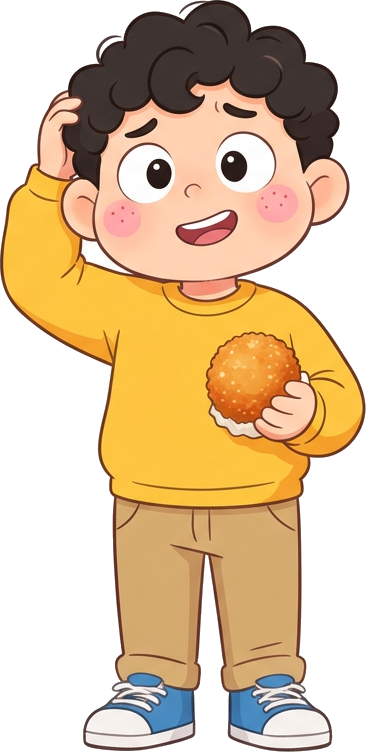
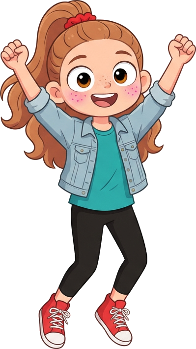
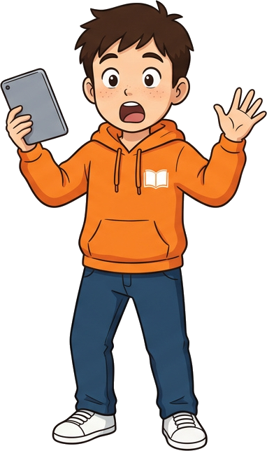
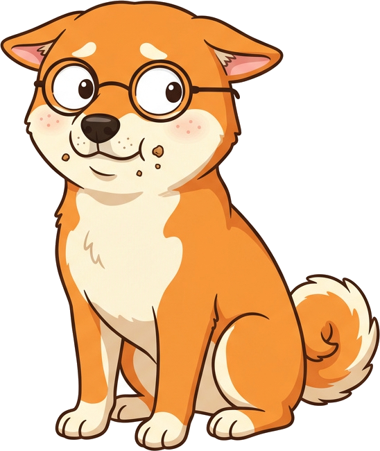
Chi ha mangiato la mia merenda?!
Facciamo i detective: guardiamo ogni parola!
Io no! Forse… un pochino.
Ricreazione in 2E. Salvatore apre lo zaino: la merenda è sparita e sulla lavagna qualcuno ha scritto una frase in fretta. Luce ha le briciole sul muso…
Per scoprire la verità bisogna fare come i detective: guardare ogni parola e chiedersi che lavoro fa nella frase. Le parole della lingua italiana si dividono in nove gruppi: le parti del discorso.
In questo capitolo impari a riconoscere le nove parti del discorso · distinguere parti variabili e invariabili · capire che la stessa parola può fare lavori diversi · fare l'analisi grammaticale passo dopo passo.
Ripasso grammaticale8
Mappa del capitolo
Mappa interattiva sul sito
LE PARTI DEL DISCORSO
Variabili
articoloil · una
nomeEtna · gatto
aggettivobuona · mio
pronomeio · la · che
verbocorre · è sparita
Invariabili
avverbioieri · piano
preposizionedi · a · da
congiunzionee · ma · perché
interiezioneoh! · uffa!
Una parola,
tanti lavori
nomesuona il piano
avverbioparla piano
aggettivoun prato piano
Analisi
grammaticale
1 · che parte?nome
2 · che tipo?comune, concreto
3 · che forma?femm. sing.
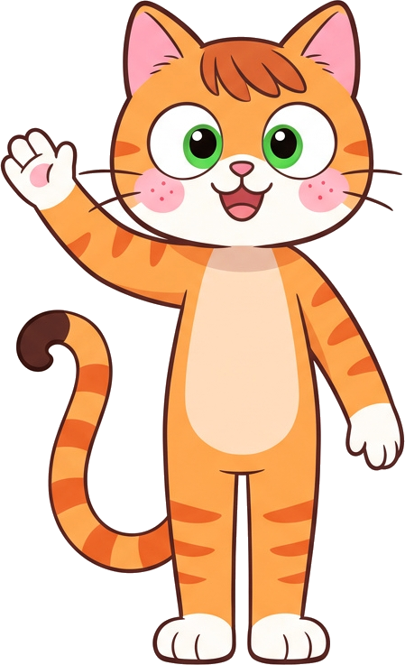
Sono Virgola, il gatto della scuola. Gli errori li vedo tutti, miao!
Ripasso grammaticale1. Le parti del discorso 9
percominciare
1
Le parole si sono attaccate! Separale con una barra e riscrivi la frase.
- Lucemangiaunbiscottoalpistacchio.
- Laprofessoressaspiegalagrammaticaaragazzi.
- L'Etnafumapianopianosopraimuliditaormina.
2
Cerchia i nomi: indicano persone, animali, cose, luoghi o idee.
onlineCFC-1-01
- Mia canta una canzone nella palestra della scuola.
- Virgola dorme sui vocabolari della biblioteca.
- A Taormina il teatro antico guarda il mare e il vulcano.
risposte esatte 11
3
In ogni gruppo c'è un intruso: una parola che fa un lavoro diverso. Cancellala.
onlineCFC-1-02
- cane • lavagna • corre • amicizia
- verde • allegro • Sicilia • piccolo
- il • una • lo • sotto
- gioca • scrive • bello • dorme
- ieri • sempre • lentamente • banco
- e • ma • però • con
4
a coppieScrivete ogni parola nella colonna giusta, poi confrontate con un compagno.
scuolascriveresimpaticolìEtnaridebiancodomani
| nome | verbo | aggettivo | avverbio |
|---|
| | | |
5
Scrivi tu una frase su Virgola che contenga almeno un nome, un verbo e un aggettivo.
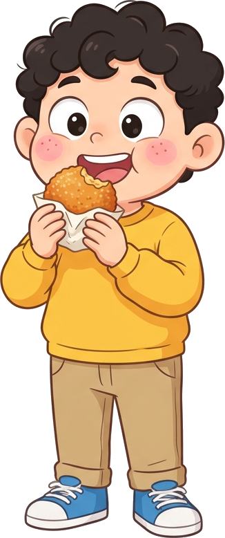
SalvatoreIo conosco tutte le parole importanti: «arancino», «cannolo», «granita»…
LudovicaSono tutti nomi, Salvo! Per fare una frase servono anche parole che fanno altri lavori.
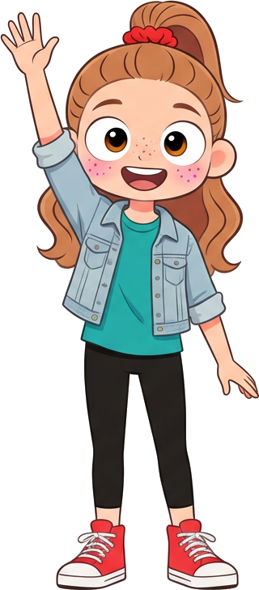
Ripasso grammaticale10
percominciare
dal TESTO alla GRAMMATICA
Il pescatore che diventò pesce
A Messina viveva un ragazzo di nome Nicola, che tutti chiamavano Colapesce, perché passava le giornate in fondo al mare. Conosceva ogni grotta e ogni corrente, e tornava a riva con conchiglie, coralli e storie incredibili.
Un giorno il re volle metterlo alla prova. Gettò una coppa d'oro tra le onde e gli chiese di riportarla. Colapesce si tuffò e risalì con la coppa. Allora il re lanciò la sua corona ancora più lontano, dove l'acqua era scura e fredda.
Colapesce scese giù, giù, fino in fondo, e vide che la Sicilia poggiava su tre colonne: una era tutta rovinata. Per non far sprofondare l'isola, decise di restare là sotto a sorreggerla. E dicono che, quando la terra trema, è Colapesce che cambia spalla.
(leggenda siciliana, raccontata da Vlad Editore)
Comprensione del testo
1
Indica quale parola corrisponde al significato usato nel testo.
- sorreggere: A sostenere B spingere C rompere
- sprofondare: A galleggiare B andare a fondo C volare
2
Rispondi alle domande.
- Perché Nicola si chiamava Colapesce?
- Che cosa vide in fondo al mare?
- Che cosa succede, secondo la leggenda, quando la terra trema?
Un po' di grammatica
3
Nel primo paragrafo sottolinea i nomi in blu e i verbi in rosso.
onlineCFC-1-03
4
Trascrivi tre aggettivi del testo insieme al nome a cui si riferiscono.
Lo sapevi?
La leggenda di Colapesce si racconta da più di ottocento anni, in tante versioni diverse: a Messina, a Palermo e perfino a Napoli. Ogni città dice che Colapesce era suo!
Ripasso grammaticale1. Le parti del discorso 11
1
Nove parti, nove lavori
Guarda di nuovo la frase scritta sulla lavagna. Ogni parola fa un lavoro diverso:
Ohinteriezione,
laarticolo
buonaaggettivo
merendanome
dipreposizione
Salvatorenome
è sparitaverbo!
C'è chi dà il nome alle cose, chi dice com'è una cosa, chi racconta che cosa succede, chi collega le parole tra loro. Questi gruppi di parole si chiamano parti del discorso.
DefinizioneLe parti del discorso sono i nove tipi di parole della lingua italiana: ognuna ha un compito preciso nella frase.
| Parte | Che lavoro fa | Esempi |
|---|
| articolo | sta davanti al nome e ne indica genere e numero | il, lo, la, un, una |
| nome | indica persone, animali, cose, luoghi, idee | Wijdane, gatto, Catania |
| aggettivo | dice com'è il nome o lo precisa | buona, verde, mio |
| verbo | dice che cosa si fa, che cosa succede | corre, è sparita |
| pronome | prende il posto di un nome | io, lei, la, che |
| avverbio | precisa il verbo: come? quando? dove? | bene, ieri, qui |
| preposizione | collega le parole tra loro | di, a, da, in, con |
| congiunzione | unisce parole o frasi | e, ma, perché |
| interiezione | esprime un'emozione, da sola | oh!, uffa!, evviva! |
Per approfondire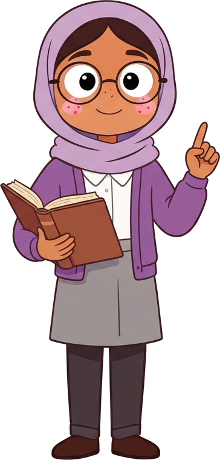
Più di duemila anni fa il grammatico greco Dionisio Trace contava otto parti del discorso: l'elenco è cambiato, ma l'idea è rimasta la stessa.
NON sbagliare!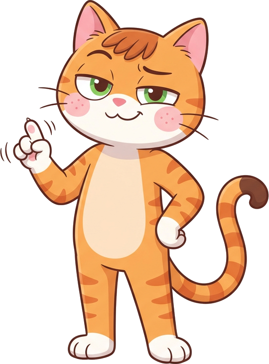
«La» non è sempre un articolo! La cagnolina dorme → articolo. Vlad la guarda → pronome (prende il posto di «la cagnolina»).
Vlad la guarda: «la» è un articolo → «la» è un pronome
Una parola, tanti lavori
La stessa parola può fare lavori diversi: dipende da come è usata nella frase.
- Riccardo suona il pianonome · Parla pianoavverbio, Luce dorme! · Il prato è pianoaggettivo.
Ripasso grammaticale12
2
Parole che cambiano, parole che non cambiano
Proviamo a passare dal singolare al plurale. Quali parole devono cambiare forma?
Il gatto rosso dorme sempre sui libri.
I gatti rossi dormono sempre sui libri.
Articolo, nome, aggettivo e verbo hanno cambiato forma; l'avverbio sempre è rimasto uguale. Le nove parti del discorso si dividono così in due grandi famiglie.
DefinizioneLe parti VARIABILI cambiano forma: articolo, nome, aggettivo, pronome, verbo. Le parti INVARIABILI non cambiano mai: avverbio, preposizione, congiunzione, interiezione.
Che cosa cambia?
| Parte variabile | Cambia per… | Esempio |
|---|
| nome, articolo, aggettivo, pronome | genere (maschile / femminile) e numero (singolare / plurale) | il gatto rosso → le gatte rosse |
| verbo | persona, numero, tempo e modo | io gioco → voi giocate → noi giocheremo |
Per approfondire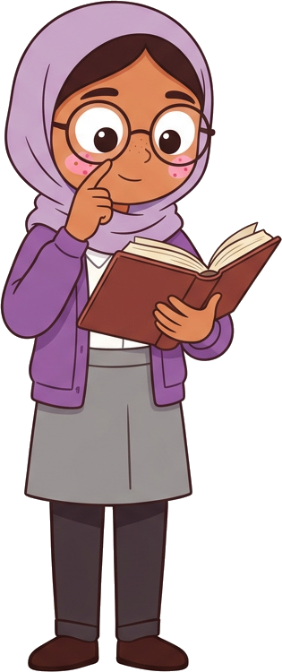
Alcune parole variabili sembrano non cambiare mai: la città → le città, il re → i re, lo sport → gli sport. Si chiamano nomi invariabili, ma restano nomi: a cambiare è l'articolo. Conta la famiglia della parola, non la singola parola.
NON sbagliare!
Le preposizioni articolate (del, della, sui, nelle…) cambiano solo perché contengono un articolo: di + il = del. La preposizione dentro (di) resta sempre uguale, quindi la preposizione è invariabile.
SalvatoreAllora «arancino» è variabile: un arancino, due arancini, tre arancini…
LudovicaGiusto! E se te li mangi tutti diventano «nessun arancino»!
Ripasso grammaticale1. Le parti del discorso 13
ESERCIZI
ESERCIZI
1
Completa le frasi con la parola giusta, scegliendo tra quelle elencate.
onlineCFC-1-04
ieriMarcolavelocementeallegrae
- ha segnato un gol bellissimo.
- Jaela ha fatto danza aerea pomeriggio.
- Mia canta una canzone .
- Luce corre verso la ciotola.
risposte esatte 4
2
Variabile (V) o invariabile (I)? Segna con una crocetta.
| parola | V | I | parola | V | I |
|---|
| ragazzo | | | sotto | | |
| allegro | | | perché | | |
| noi | | | uffa! | | |
3
Nelle frasi ci sono errori: trova la parola usata male e correggila. Attenzione: non tutte le frasi ne contengono.
- Salvatore ha mangiato due arancini buonissima.
- Wijdane legge un libro molto interessante.
- La prof ci ha spiegato i verbi e poi li ha interrogato.
4
indagineChi ha mangiato la merenda? Leggi gli indizi, trova la parte del discorso giusta e scopri il colpevole.
onlineCFC-1-05
- Il colpevole ha quattro zampe: «zampe» è un .
- Il colpevole porta gli occhiali rotondi: «rotondi» è un .
- Il colpevole abbaia forte: «forte» qui è un .
Il colpevole è:
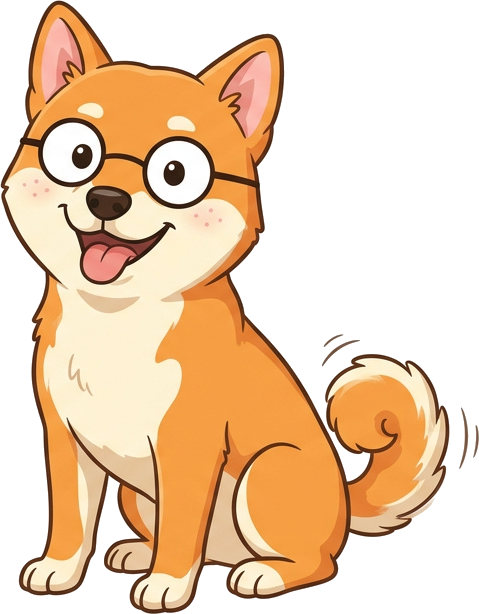
LuceIo? Ma io ho soltanto… assaggiato!
Vlad«Soltanto» è un avverbio, Luce. E anche una scusa!

Ripasso grammaticale14
3
Chi? Che cosa? Com'è?
Tre parti del discorso lavorano quasi sempre in squadra: il nome dice chi o che cosa, l'articolo lo accompagna, l'aggettivo dice com'è.
Laarticolo
professoressanome
simpaticaaggettivo
legge
unarticolo
raccontonome
sicilianoaggettivo.
Il nome
- comune (gatto, scuola) o proprio, con la maiuscola (Virgola, Taormina);
- concreto, si percepisce con i sensi (banco, profumo) o astratto (amicizia, paura);
- collettivo: al singolare indica un gruppo (classe, squadra, stormo).
L'articolo
| maschile sing. | femminile sing. | maschile plur. | femminile plur. |
|---|
| determinativo | il, lo, l' | la, l' | i, gli | le |
| indeterminativo | un, uno | una, un' | non c'è: si usa il partitivo (dei, degli, delle) |
L'aggettivo
L'aggettivo qualificativo dice una qualità (rosso, allegro, enorme). Gli aggettivi determinativi precisano il nome: possessivi (mio, tuo), dimostrativi (questo, quello), numerali (tre, primo), indefiniti (alcuni, ogni).
DefinizioneL'aggettivo si accorda sempre con il nome: stesso genere e stesso numero (la merenda buona → le merende buone).
Lo sapevi?
In siciliano l'arancino a Palermo è femminile, l'arancina, mentre a Catania è maschile, l'arancino. Il nome è lo stesso, cambia solo il genere!
Ripasso grammaticale1. Le parti del discorso 15
4
Al posto del nome, il cuore della frase
Il pronome
Il pronome prende il posto di un nome già detto, così non lo ripetiamo.
- Luce ha trovato un biscotto e lopronome ha mangiato. (lo = il biscotto)
- Leipronome legge sempre: è Wijdane.
- Il libro chepronome leggo è di Vlad Editore. (che = il libro)
I pronomi più usati sono i personali (io, tu, lui, lei, noi, voi, loro; mi, ti, lo, la, gli, ci, vi, li, le), ma ci sono anche possessivi, dimostrativi, relativi, interrogativi e indefiniti.
Il verbo
Il verbo è il cuore della frase: dice che cosa fa il soggetto, che cosa gli succede o com'è. Senza verbo non c'è frase.
- Virgola dormeazione sui vocabolari.
- La merenda è sparitafatto.
- Luce èstato golosa.
| Il verbo cambia per… | Esempio |
|---|
| persona e numero: io, tu, lui/lei, noi, voi, loro | canto, canti, canta, cantiamo, cantate, cantano |
| tempo: presente, passato, futuro | Mia canta · Mia ha cantato · Mia canterà |
| modo: indicativo, congiuntivo, imperativo… | canti · che tu canti · canta! |
NON sbagliare!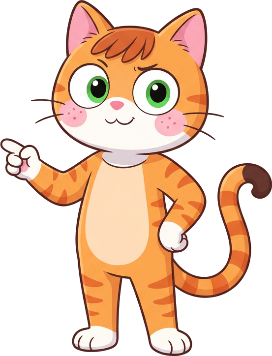
È sparita, ha mangiato, sono partiti: un verbo può essere fatto di due parole. Nell'analisi grammaticale sono un solo verbo: non dividerli!
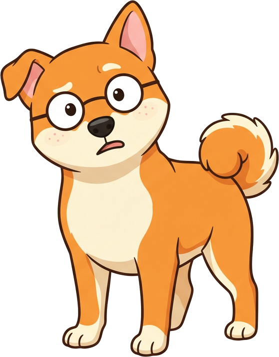
LuceSe dico «io» al posto di «Luce», divento un pronome?
WijdaneNo, Luce: tu resti un cane! È la parola «io» a essere un pronome.
Ripasso grammaticale16
ESERCIZI
ESERCIZI
5
Nomi comuni o propri? Scrivi C o P accanto a ogni nome.
onlineCFC-1-06
- Etna
- vulcano
- Riccardo
- compagno
- Messina
- città
- Virgola
- gatto
risposte esatte 8
6
Completa con l'articolo determinativo giusto.
- zaino
- amiche
- gnocchi
- isola
- psicologo
- yogurt
7
Sottolinea gli aggettivi e collegali con una freccia al nome a cui si riferiscono.
onlineCFC-1-07
- Beatrice ha un sorriso allegro e due occhi curiosi.
- Nella vecchia biblioteca dorme un gatto rosso.
- Questo arancino è enorme, ma il mio è più buono.
8
Sostituisci le parole ripetute con un pronome.
- Ho visto Sofia e ho salutato Sofia. →
- Stefano tira il pallone e Marco prende il pallone. →
9
Cerchia i verbi. Attenzione: alcuni sono fatti di due parole!
onlineCFC-1-08
Stamattina Martina è arrivata in classe di corsa. Ha aperto lo zaino, ha cercato il diario e ha gridato: «Chi ha preso la mia penna?». Thomas ha riso e le ha mostrato la penna dietro l'orecchio.
risposte esatte 8
Ripasso grammaticale1. Le parti del discorso 17
5
Le parole che non cambiano mai
Le quattro parti invariabili sono piccole, ma senza di loro le frasi non starebbero insieme.
| Parte | Che lavoro fa | Esempio |
|---|
| avverbio | precisa il verbo, un aggettivo o un altro avverbio: come? quando? dove? quanto? | Luce corre velocemente. Torno domani. Abito qui. |
| preposizione | collega due parole e mostra il loro legame | il diario di Vlad · vado a scuola · parto da Catania |
| congiunzione | unisce due parole o due frasi | Mia e Jaela · studio perché domani c'è la verifica |
| interiezione | esprime da sola un'emozione, un suono, un saluto | Oh! Uffa! Evviva! Ciao! |
DefinizionePreposizioni semplici: di, a, da, in, con, su, per, tra, fra. Unite all'articolo diventano articolate: del, al, dal, nel, col, sul…
Avverbi in -mente
Molti avverbi di modo nascono da un aggettivo femminile + -mente: lenta → lentamente, felice → felicemente, facile → facilmente.
NON sbagliare!
«Molto» può essere aggettivo o avverbio. Ho molti compiti → aggettivo (cambia: molti). Sono molto stanco → avverbio (non cambia mai).
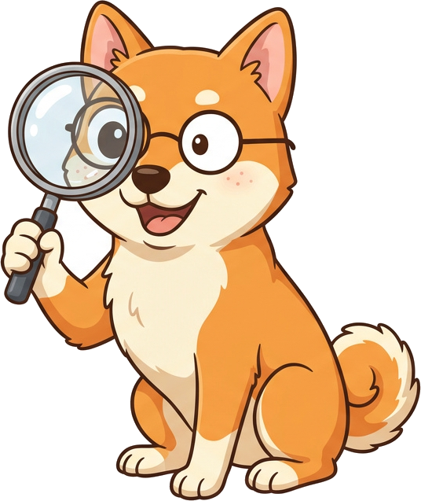
LuceHo scoperto il trucco: se la parola non cambia mai, è una delle quattro invariabili!
VladBrava detective! Poi chiedi «come? quando? dove?» e trovi gli avverbi.
Ripasso grammaticale18
6
L'analisi grammaticale, passo dopo passo
Fare l'analisi grammaticale vuol dire dire, per ogni parola della frase, che parte del discorso è e com'è fatta. Si va in tre passi.
- Che parte è? Fai la domanda giusta: chi? che cosa? com'è? che cosa fa?
- Che tipo è? Comune o proprio, determinativo o indeterminativo, qualificativo o possessivo…
- Che forma ha? Genere e numero; per il verbo persona, tempo e modo.
Un esempio
Ieri la nostra classe ha visitato Taormina.
| Parola | Analisi |
|---|
| Ieri | avverbio di tempo |
| la | articolo determinativo, femminile singolare |
| nostra | aggettivo possessivo, femminile singolare |
| classe | nome comune, concreto, collettivo, femminile singolare |
| ha visitato | verbo visitare, 3ª persona singolare, indicativo passato prossimo |
| Taormina | nome proprio di luogo, femminile singolare |
Per approfondire
La stessa parola può fare lavori diversi (unità 1): prima di analizzarla guarda sempre che lavoro fa in quella frase. Il bello della gita → nome; un bello spettacolo → aggettivo.
Prof.ssa SiligatoUna parola alla volta, ragazzi: prima la domanda, poi il tipo, poi la forma.
SalvatoreCome per l'arancino: prima lo guardo, poi lo annuso, poi lo mangio!
Ripasso grammaticale1. Le parti del discorso 19
ESERCIZI
ESERCIZI
10
Trasforma gli aggettivi in avverbi in -mente.
- veloce →
- tranquillo →
- allegro →
- gentile →
11
Preposizione (P), congiunzione (C) o avverbio (A)? Segna con una crocetta.
onlineCFC-1-09
| frase | P | C | A |
|---|
| Reyana va a danza il martedì. | | | |
| Simone fa domande perché è curioso. | | | |
| Alice alza sempre la mano per prima. | | | |
| Il quaderno di Manuela è ordinatissimo. | | | |
| Aurora disegna e Matilde colora. | | | |
risposte esatte 5
12
Fai l'analisi grammaticale della frase, parola per parola.
onlineCFC-1-10
Oh, il mio gatto dorme tranquillamente sul divano!
| parola | analisi |
|---|
| Oh | |
| il | |
| mio | |
| gatto | |
| dorme | |
| tranquillamente | |
| sul | |
| divano | |
13
a coppieUno scrive una frase di sei parole, l'altro ne fa l'analisi. Poi scambiatevi i ruoli.
Ripasso grammaticale20
ESERCIZI
GIOCHI DI PAROLE
14
Cruciverba delle parti del discorso.
Orizzontali
1. Sta sempre davanti al nome: il, la, uno…
5. Esprime un'emozione, da sola: oh!, uffa!
Verticali
1. Risponde a come? quando? dove? (es. ieri, bene)
2. Prende il posto del nome: io, lei, la, che…
3. Indica persone, animali, cose, luoghi, idee
4. Dice che cosa si fa o che cosa succede
15
indagineIl mistero della biblioteca. Qualcuno ha lasciato un messaggio sul vocabolario. Segui gli indizi e scopri chi è stato.
onlineCFC-1-11
«Ho dormito qui tutta la notte. Sono rosso, ho la coda a virgola e conosco tutti gli errori.»
- Quanti verbi ci sono nel messaggio?
- «qui» è un di luogo.
- «rosso» è un qualificativo.
- «tutti» qui è un aggettivo .
Chi ha scritto il messaggio?
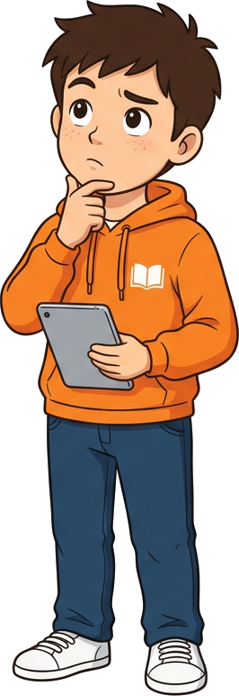
VladCoda a virgola… dormito in biblioteca… mi ricorda qualcuno!
VirgolaMiao. Non guardate me: io stavo solo… correggendo.
Ripasso grammaticale1. Le parti del discorso 21
✓
Facciamo il punto
Il capitolo in 5 righe
- Le parole italiane si dividono in nove parti del discorso, ognuna con il suo lavoro.
- Variabili: articolo, nome, aggettivo, pronome, verbo. Invariabili: avverbio, preposizione, congiunzione, interiezione.
- Nome, articolo e aggettivo si accordano in genere e numero; il verbo cambia per persona, numero, tempo e modo.
- La stessa parola può fare lavori diversi: conta come è usata nella frase.
- L'analisi grammaticale si fa in tre passi: che parte è, che tipo è, che forma ha.
Errori comuni (Virgola li ha visti tutti)
| ha · mangiato = due parti | → ha mangiato è un solo verbo |
| «la» è sempre articolo | → davanti a un verbo è un pronome (la guardo) |
| «del» è variabile | → è una preposizione articolata: invariabile |
| «molto» è sempre avverbio | → davanti a un nome è un aggettivo (molti libri) |
Completa tu la mappa
Variabili
Invariabili
Analisi in 3 passi
LudovicaPronti per la verifica? Ripassate la mappa: se la sapete completare, siete a metà strada!
Ripasso grammaticale22
VERIFICA
Nome Data
1Scrivi le nove parti del discorso, dividendole in variabili e invariabili.__ / 4
2Sotto ogni parola sottolineata scrivi che parte del discorso è.__ / 8
- Ieri Riccardo ha raccontato una barzelletta divertentissima.
- Evviva! La prof ci porta in gita ma dobbiamo studiare.
3Vero o falso? Segna con una crocetta.__ / 5
| affermazione | V | F |
|---|
| L'avverbio cambia al plurale. | | |
| «Ha preso» è un solo verbo. | | |
| L'aggettivo si accorda con il nome. | | |
| «Del» è un articolo. | | |
| Il pronome prende il posto di un nome. | | |
4Trova e correggi l'errore in ogni frase.__ / 3
- Jaela fa una danza aereo bellissima.
- Ho visto i ragazzi e lo ho salutati.
- Mia canta molto bena.
Ripasso grammaticale1. Le parti del discorso 23
5Fai l'analisi grammaticale completa.__ / 10
Domani la simpatica Vittoria porterà due torte in classe.
| parola | analisi |
|---|
| Domani | |
| la | |
| simpatica | |
| Vittoria | |
| porterà | |
| due | |
| torte | |
| in | |
| classe | |
Totale / 30
Autovalutazione
Colora la faccina che ti somiglia di più.
| So… | 😀 | 😐 | 😟 |
|---|
| riconoscere le nove parti del discorso | ○ | ○ | ○ |
| distinguere parti variabili e invariabili | ○ | ○ | ○ |
| capire che lavoro fa una parola nella frase | ○ | ○ | ○ |
| fare l'analisi grammaticale in tre passi | ○ | ○ | ○ |
Prima di andare avanti
Hai preso meno di 18? Rifai gli esercizi online con i codici CFC-1-…: il sito ti dice subito dove hai sbagliato. Più di 24? Sei pronto per il capitolo 2!
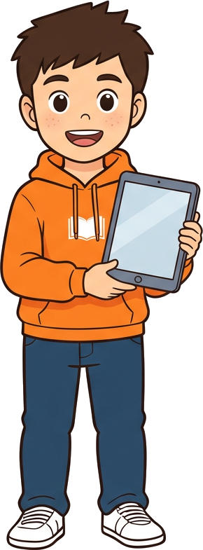
VladSul sito ci sono altri esercizi: inquadra il QR e allenati quanto vuoi!
Ripasso grammaticale24
Compito di realtà
Il cartellone delle parole al lavoro
La prof.ssa Siligato vuole appendere in classe un cartellone che spieghi le parti del discorso ai ragazzi di prima media. Lo preparate voi, in gruppi da quattro.
- Scegliete una frase sulla vostra scuola, su Taormina o sulla Sicilia, lunga almeno dieci parole.
- Scrivetela in grande e colorate ogni parola con il colore della sua parte del discorso (usate i colori del libro).
- Disegnate un personaggio per ogni parte del discorso: il nome può essere un detective, il verbo un atleta, la congiunzione un ponte…
- Aggiungete una regola e un «NON sbagliare!» per ogni personaggio.
- Presentate il cartellone alla classe in tre minuti: ognuno del gruppo spiega almeno due parti.
Qui potete fare la brutta copia del cartellone
| Come lavoriamo (lo compila il gruppo) | sì | in parte | no |
|---|
| Abbiamo usato tutte e nove le parti del discorso | ○ | ○ | ○ |
| Ognuno ha avuto un compito | ○ | ○ | ○ |
| Abbiamo spiegato con parole nostre | ○ | ○ | ○ |
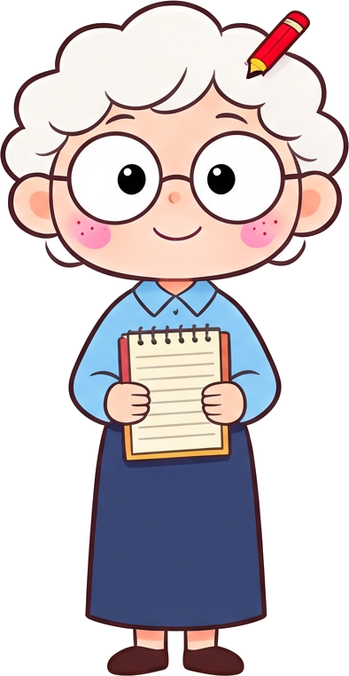
Prof.ssa SiligatoIl cartellone più chiaro andrà nel corridoio della scuola!
Ripasso grammaticale1. Le parti del discorso 25